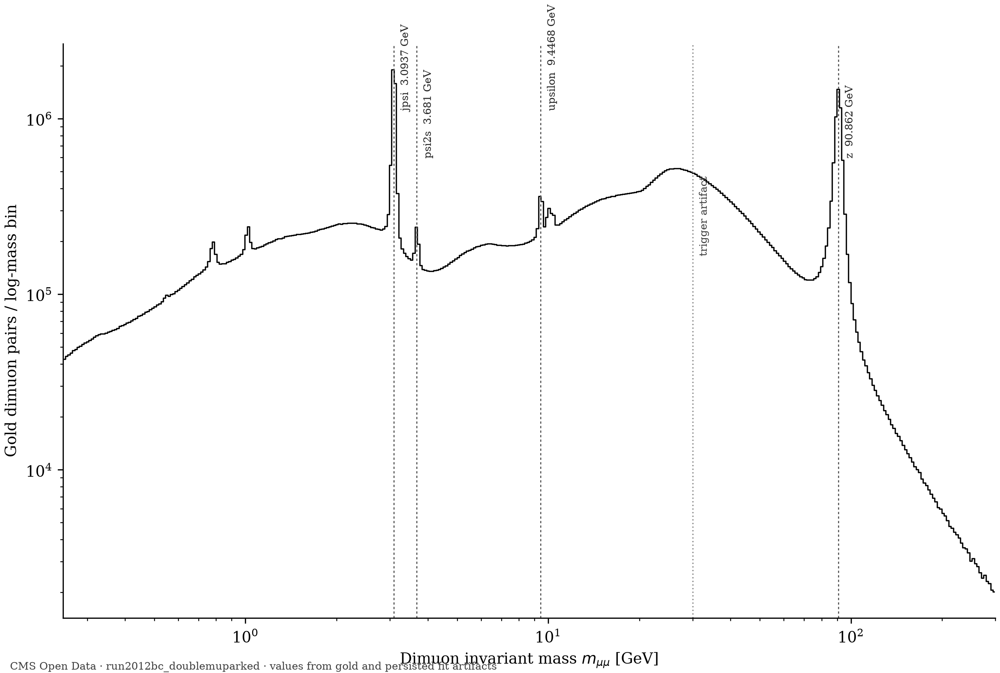

A lakehouse for LHC open data. 61.5 million real CMS events flow through quality-gated layers until four particle masses fall out — every number traceable to a config hash, a certification log, and a dataset DOI.

Real figure from Hodoscope run 20261110T000101.653408Z-eed7ca, generated by --stage figures; annotations come from persisted fit artifacts.
A CLI run drives the configured pipeline stages. Configuration steers from above, quality gates stand between every layer, and the medallion tiers carry their own colors — raw stays immutable, bronze mirrors, silver certifies, gold builds physics, results carry claims.
Red diamonds are data-quality gates: structural checks at bronze, acceptance and certification checks at silver, pair-key integrity at gold. A gate failure halts the run — bad data cannot propagate.
The CLAM downloader fetches CERN files in resumable chunks, then every raw file is hashed (SHA-256) into MANIFEST.json beside its portal record number and DOI. Raw is immutable from this moment; every downstream row can prove where it came from.
uproot streams the ROOT file in batches and awkward arrays unpack the jagged muon lists. Each batch becomes two Parquet tables — scalar events and long-format muons — faithful to the source, no opinions applied. Measured at full scale: 61.5 M events in 14 m 28 s (per the M1 result ledger).
Detector certification joins the golden JSON (only luminosity blocks where CMS was fully healthy survive) and object cleaning drops individual muons outside the |η| ≤ 2.4 acceptance — 0.802 % on real 2012 data, a number that goes straight into the paper. Trigger flags pass through untouched: flags are data, cuts are analysis decisions.
YAML-defined selections (hashed into a selection_id stamped on every row) admit muons; every opposite-charge pair gets a full float64 four-vector invariant mass, pair kinematics, and a canonical pair_idx. Vectorized array ops replaced the original Python loop. The frozen-oracle regression checks numeric outputs to 1e-12 absolute tolerance; the DuckDB comparison checks the synthetic fixture to 1e-7.
iminuit runs binned extended maximum-likelihood fits per resonance window — Crystal Ball for J/ψ, a PDG-constrained triple Gaussian for the merged Υ states, a Voigtian for the Z — and writes fitted mass ± uncertainty against Particle Data Group values. Toy-fit pull calibration is covered by a seeded regression test; uncertainties are statistical.
The ladder plot, per-peak fit panels, and the PDG comparison table are generated from fits.parquet — no number is ever typed by hand. Each run appends its timing row to the benchmark ledger, so every speedup in the paper is measured, never projected.
Underneath the physics, ColliderLake is a small, deliberate stack. Each concern has exactly one owner.
dataset= (gold adds analysis=). Open files, no engine lock-in: the same bytes serve pandas, DuckDB, and Spark. Readers project only the columns they use — the fit stage projects only the mass column from gold.errordef calibrated by toy studies. A fit that fails to converge raises — never silently returns.selection_id (hash of the cut config) on every gold row, fit_config_id on every fit. Streaming DQ gates between layers check structure, physics bounds, and key uniqueness — tiered so a missing optional column is noted while a missing key column fails loudly. Every risky rewrite ships with its predecessor frozen as a test oracle.COLLIDERLAKE_DATA_ROOT isolates every artifact path — tests run in throwaway roots and can never touch production data.ColliderLake · Project RESONANCE — independent analysis of CMS Open Data (records 12341, 30563). Neither CMS nor CERN endorse works produced using these data. Paper 2, the RECKONING anomaly search, builds on the same gold tables with zero upstream changes — that is the platform thesis.